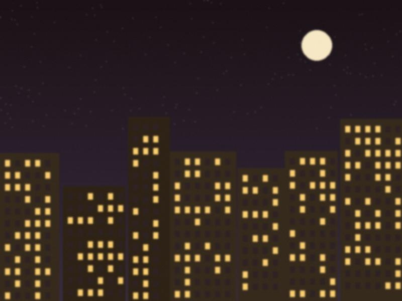

The hall gave us the same floor on the same day: a toi at 6, a funeral lunch (as, the memorial meal) for an old man at 1 p.m. The chairs were still warm. The family of the old man left a candle on the head table, and the groom's mother saw it and said "leave it", and it stayed through the whole toi.
I started the toast to the dead with that candle. It was the quietest minute of my year. Then the DJ turned the music on and the bride danced with the grandfather of the groom, and he was crying and laughing and 82.

The candle on the head table. Nobody moved it.
110 notes
Comments are closed.